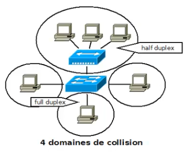

Switching : Fondamentaux
Plan
• Rappel : qu'est ce qu'un commutateur
• Commutation
• Apprentissage
• Domaine de collision
Rappel : qu'est ce qu'un commutateur ?
• élément de niveau 2 du modèle OSI
◇ agit donc au niveau de la liaison
▪ adresse MAC, CSMA/CD, etc ...
• nombreuses fonctionnalités supplémentaires
◇ par rapports aux hubs (composants de niveau 1)
▪ commutation (ie. aiguillage)
◇ et aux bridges (composants de niveau 2)
▪ multiport
Commutation
• Un commutateur est un composant multi-ports
◇ une ou plusieurs machines pourront donc être reliées à chacun
◇ ce qui va permettre de déterminier de manière intélligente où envoyer chaque trame
▪ en fonction de son adresse MAC de destination
- un port étant associé à chaque adresse MAC
▪ c'est ce qu'on appellera la commutation
- à ne pas confondre avec le routage
• Le commutateur va établir ces correspondances port/adresses MAC
◇ grâce à une table CAM (Content Addressable Memory)
Apprentissage
• Au départ, la table CAM du commutateur est vide
◇ aucune correspondance MAC/port
• Celle-ci va donc être remplie de manière dynamique et intélligente
• A la réception d'une trame, le commutateur va :
◇ associer l'adresse MAC source au port par lequel est parvenue cette trame
◇ puis envoyer le paquet à tout le monde (ie sur tout les ports)
◇ quand la machine de destination répondra à cette trame, il pourra alors associer son adresse MAC au port par lequel est parvenu cette réponse.
Domaine de collision
• Zone logique du réeau dans laquelle les collisions sont possibles
◇ toute portion constituée uniquement de composants de niveau 1
• Un commutateur stocke les trames avant envoi
◇ afin de ne les envoyer que si le media est libre
◇ évite donc les collisions
◇ permet de ne plus utiliser le CSMA/CD
▪ c'est qu'in appel le full duplex
▪ opposé au half duplex, utilisé avec les hubs et la câbles coaxiaux
▪ utilisation déterminée automatiquement par la carte réseau

Ce qu'on a courvert
• introduction au switching
◇ rappel des principes du commutateur
◇ intérêts et principes de la commutation
◇ design
▪ domaine de collision